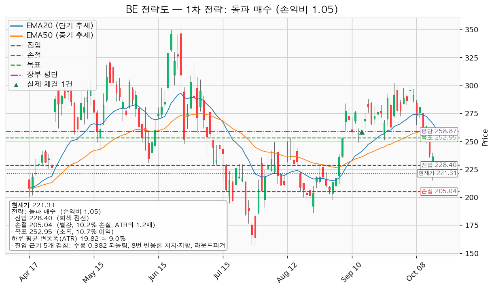
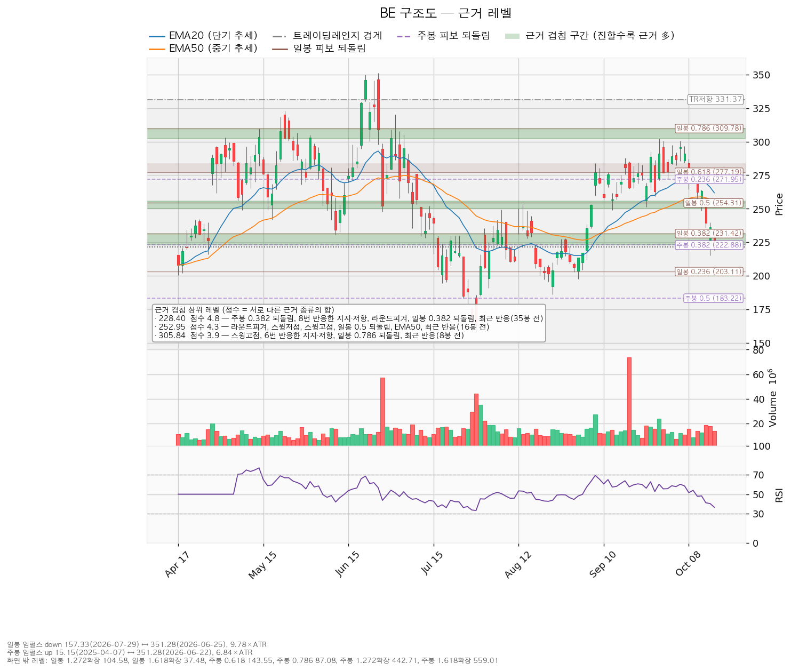
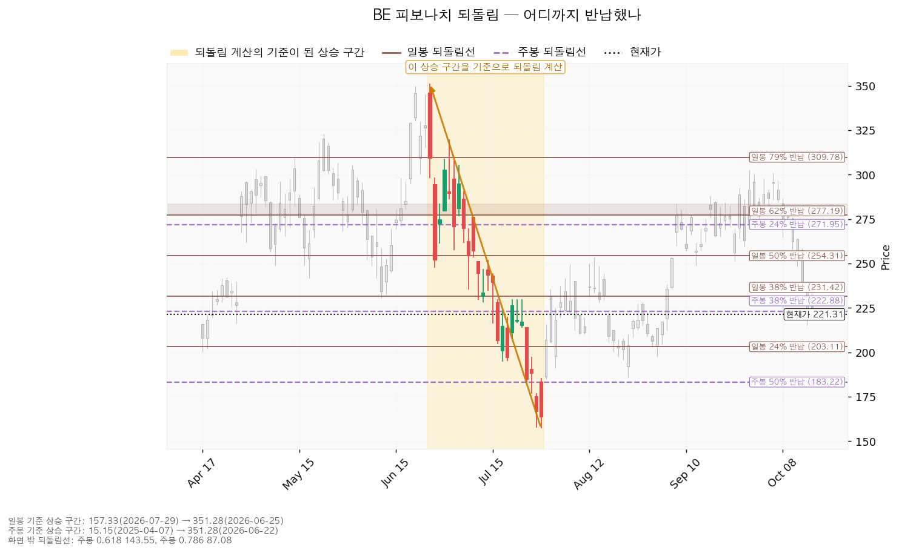
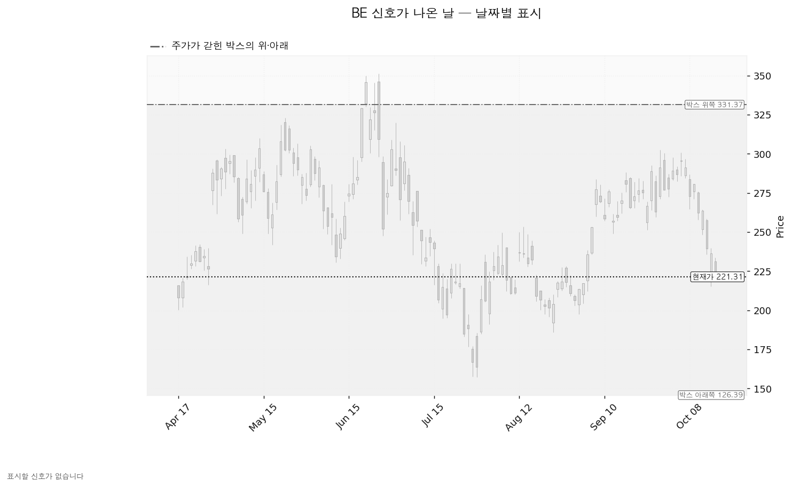

블룸에너지(BE)는 천연가스·수소로 전기를 만드는 고체산화물 연료전지 발전 장비를 제조하는 미국 기업으로, 데이터센터·공장·상업시설에 현장 설치형 전원을 공급합니다.
기준 종가 2026-10-16 221.31달러.
| 구분 | 가격 | 판정 방식 | 현재 상태 | 현재가 대비 |
|---|---|---|---|---|
| 회복선 (진입 조건) | 228달러 | 일봉 종가로 넘기면 매수, 이후 되돌림에서 지지 확인 | 회복 대기 | +3.20% |
| 집행 손절 | 205달러 | 장중 저가로 닿으면 전량 매도 (손절) — 1주 보유 중이라 지금 작동 | 작동 중 | -7.35% |
| 관망 종료 기준 | 210달러 / 2026-10-23 | 228달러 회복 전에 210달러 종가 이탈 또는 실적일 도래 — 매수 계획 종료, 새 리포트 대기 (보유 1주는 그대로) | 대기 | -5.11% |
| 확인선 | 253달러 | 일봉 종가 돌파 후 되돌림 지지 | 미돌파 — 목표와 같은 값 | +14.30% |
| 폐기선 (구조) | 126달러 | 이탈 후 3거래일 내 종가 회복 실패(또는 그 전에 107달러 아래 종가) + 반등에서 저항 확인 | 유지 중 — 실무상 작동하지 않음 | -42.89% |
① 성적표: 진입 조건 272달러는 10-08 저가 264.50달러로 충족됐고(장부에 매수 기록 없음), 목표 305달러에는 닿지 않은 채 10-14 저가 235.70달러로 집행 손절 246달러에 먼저 닿았습니다. 보유 1주는 장부상 매도 기록이 없어 그대로 남아 있습니다(미집행 매도 신호 1회, 10/14 집행 손절). ② 좌표 이동: 10-12~10-16에 262.28 → 221.31달러로 내려와 250~256 구간(EMA50·일봉 0.5 되돌림)과 240~248 선반을 모두 밑돌았습니다. 그래서 엔진이 228달러 회복 돌파를 대표로 골라 진입 272 → 228달러, 손절 246 → 205달러, 목표 305 → 253달러, 손익비 1:1.26 → 1:1.05로 바뀌었고, 확인선은 331 → 253달러로 내려왔습니다. 폐기선 126달러는 같습니다. ③ 판단과 정정: 눌림 매수에서 회복 돌파 매수 대기로 바뀌었습니다. 직전 계획은 손절로 끝났습니다. 이번 리포트는 보유 1주의 손절을 205달러로 다시 거는데, 이는 246달러 손절이 닿은 뒤 더 아래로 옮긴 것이라 그 1주의 최대 손실이 평단 대비 -4.94%에서 -20.79%로 커집니다(1주라 금액은 53.83달러). 다음 실적일은 CLI 기준 10-28에서 10-23으로 바뀌었습니다.
| 항목 | 돌파 매수 (대표) |
|---|---|
| 엣지 / 구조 증명도 | 모멘텀 — 저항을 넘으면 그 방향이 이어진다는 전제, 자주 틀리고 소수가 크게 맞는 유형(일반적 성격이며 측정값이 아님) / 돌파 확인형 |
| 진입 / 손절 / 목표 | 228달러 (일봉 종가 확인) / 205달러 / 253달러 (단일 목표 전량 매도, 트레일링 없음) |
| 손익비 | 1:1.05 (손절 1.18 ATR) — 엔진이 별도 구조적 손절 기준 손익비를 내지 않았고, 이 손절이 이미 겹침 구간 아래의 구조적 손절입니다 |
| 진입 근거 | 근거 4개 겹침: 주봉 0.382 되돌림 + 8번 반응한 지지·저항 + 라운드피겨 + 일봉 0.382 되돌림, 35봉 전 반응, 223~231 |
| 목표 근거 | 라운드피겨 250 + 스윙저점·스윙고점 + 일봉 0.5 되돌림 + EMA50, 16봉 전 반응, 250~256 |
대표로 고른 이유: 손익비 1.05 × 돌파 확인형 × 근거 4개 겹침이며, 지수 대비 20일 초과수익 -16.80%·상대강도선 20일 기울기 -16.78%로 순위에 0.9배가 곱해졌지만 대표는 바뀌지 않았습니다. 212달러 눌림 매수는 손익비 1:0.84라 패스입니다. 진입 근거는 모멘텀이지만 집행은 레인지 규칙(구조 아래 손절, 253달러 전량 매도)을 따릅니다. 진입~목표가 1.24 ATR로 2배 미만이라 분할하지 않습니다(분할하면 전 구간 손익비 1:0.88). 253달러에서 막히면 그 가격에서 전량 매도 (목표 도달)이고, 253달러를 일봉 종가로 넘기면 상승 확정이며 새 셋업으로 다시 잡습니다. 계획 진입 228달러는 평단 258.87달러보다 -11.77% 아래라 평단을 낮추는 매수이고, 목표 253달러도 평단보다 -2.29% 아래입니다.
현재가 추격 비권장: 221달러는 228달러 저항 바로 아래입니다. 엔진의 눌림 대기 후보는 212달러(라운드피겨·5번 반응한 선반·역할 전환)이고, 현재가가 5봉 유지될 경우 EMA20은 261.83 → 245.87, EMA50은 255.85 → 249.59로 내려옵니다 — 이평선 위치 계산이며 가격 예측이 아닙니다.

| 단계 | 트리거 | 의미 | 행동 |
|---|---|---|---|
| ① 관찰 | 진입 후 일봉 종가가 228달러 아래로 마감 | 구조 이탈 시작 — 되돌아오면 속임수 하락일 수 있어 무효가 아닙니다 | 추가 진입만 중단, 집행 손절은 그대로 |
| ② 경고 | 이탈 후 3거래일 안에 228달러를 종가로 회복하지 못함, 또는 그 전에 일봉 종가가 209달러 아래로 마감(하루 평균 변동폭 1배만큼 더 밀림) — 둘 중 먼저 오는 쪽 | 박스 안으로 되밀릴 가능성이 우세 | 비중 축소, 반등 시 228달러 반응 확인 |
| ③ 무효 | 반등이 228달러에서 막히고 되밀림(지지가 저항으로 전환) | 셋업 폐기 | 전량 매도 (시나리오 폐기) 후 관망 |
집행 손절 205달러는 이 판정과 무관하게 작동하며, 장중 일시 이탈은 어느 단계에도 해당하지 않습니다. 논지 무효화: 10-23 실적에서 ① 올해 주당순이익이 컨센서스 범위 하단 2.49달러 아래로 나오거나 ② 내년분 추정치가 90일 전 값 4.55달러 아래로 돌아가거나 ③ 영업현금흐름이 적자로 돌아서면 가격과 무관하게 이 판단을 접습니다.
| 시나리오 | 조건 | 행동 |
|---|---|---|
| 상승 전환 | 228달러 종가 회복 후 지지 → 253달러 종가 돌파 | 228달러 매수분은 253달러에서 전량 매도 (목표 도달). 253달러 돌파 이후는 새 셋업 |
| 횡보 지속 | 126달러를 지키며 253달러 아래 박스 유지 — 매물을 소화하는 국면이며 부정 신호가 아닙니다 | 신규 진입 보류하고 추적: 지지 테스트 때 매도 거래량 감소 여부(현재 증가), 박스 안 저점 절상 여부(현재 절하), 상승봉 대 하락봉 거래량비(현재 0.88) |
| 시나리오 폐기 | 126달러 이탈 후 3거래일 내 회복 실패(또는 그 전에 107달러 아래 종가) + 반등에서 저항 확인 | 전량 매도 (시나리오 폐기), 새 박스가 생길 때까지 관망 |
| 가격대 | 겹친 근거 | 현재가 대비 |
|---|---|---|
| 302~310 | 스윙고점 302.35, 6번 반응한 선반, 일봉 0.786 되돌림, 8봉 전 반응 | +36.62% ~ +39.97% |
| 250~256 | 라운드피겨 250, 스윙저점·스윙고점, 일봉 0.5 되돌림, EMA50 — 목표·확인선 | +12.96% ~ +15.61% |
| 240~248 | 11번 반응한 선반, 스윙저점 247.74, 라운드피겨 240 — 10-14에 아래로 내줌 | — |
| 223~231 | 주봉·일봉 0.382 되돌림, 8번 반응한 선반, 라운드피겨 — 진입 | — |
| 210~213 | 라운드피겨 210, 5번 반응한 선반, 저항에서 지지로 바뀐 자리 — 관망 종료 기준·손절이 그 아래 | — |
| 198~203 | 스윙저점 197.50, 라운드피겨 200, 일봉 0.236 되돌림 | — |
박스는 조회한 753봉 중 180봉 창(126.39~331.37, 경계 안 비율 0.989)이 채택됐고, 90봉 창도 유효했으며 40봉 창은 유효하지 않았습니다. 지지 테스트 3회(01-30 146.55 거래량 1.00배 → 02-13 131.00, 0.64배 → 03-30 116.505, 1.26배)에서 매도 거래량이 늘고 저점이 낮아졌으며 상승봉 거래량이 하락봉의 0.88배라 분산 우위로 판정됐습니다. 직전 구간(18.69~150.52)을 위로 뚫고 들어온 박스라 재매집과 분산 양쪽이 열려 있고, 국면 후보는 분산입니다.

되돌림: 일봉은 351.28(06-25) → 157.33(07-29) 하락분을 24%(203.11) 위, 38%(231.42) 아래까지 되찾은 상태로 내려왔고, 주봉은 15.15 → 351.28 상승분의 38%(222.88)를 조금 넘게 반납해 50%(183.22) 위에 있습니다.

날짜별 신호: 속임수 하락·강세·약세 신호 어느 것도 나오지 않아 표시할 신호일이 없습니다.

(a) 후행 주가수익비율(PER) 291.20배, 선행 44.85배입니다. 올해 주당순이익 예상 2.71달러(+256.6%), 내년 4.93달러(+82.1%)로 이익 급증 구간이라 두 배수가 벌어져 있습니다. (b) 애널리스트 26명, 평균 목표 284.58달러·최저 97.00·최고 380.00이며 현재가는 평균보다 -22.23% 아래, 최저보다는 위입니다. (c) 52주 고점 대비 -37.0% 하락 동안 추정치는 90일간 올해분 +25.0%, 내년분 +8.6% 상향돼 배수 수축입니다. 최근 30일은 올해분 +0.7%, 내년분 -0.3%로 상향이 멈췄고, 확인 계기는 10-23 실적입니다. (d) 2025-12-31 결산 기준 영업현금흐름 +1억 1,395만 달러, 잉여현금흐름 +5,719만 달러, 설비투자 -3.6%로 적자가 아닙니다(10개월 전 값입니다). (e) 목표 253달러 ÷ 내년 주당순이익 4.93달러 = 51.3배로 현재 선행 44.85배 대비 +14.30% 배수 확장에 기댄 값입니다(컨센서스 평균의 내재 배수는 57.7배). 셋업은 수 주, 컨센서스는 12개월 시계입니다.
2026-10-23 분기 실적 — 올해 주당순이익 2.71달러(범위 2.49~3.02) 경로, 영업현금흐름 부호, 설비투자, 내년 가이던스. 매수 계획의 시한이며, 그 전에 228달러를 회복해 진입하면 이 실적을 들고 넘어가게 됩니다. 다음 실적 이후 구간은 확인할 자료가 없습니다.
손실 한도는 계좌 139,498,400원의 1%이고, 손절 폭 10.23%로 역산한 비중은 9.8%인 13,670,843원(환율 1,334.20 기준 10,246달러, 228달러에서 약 44주)으로 13% 상한 안입니다. 손절 시 손실은 약 1,398,209원(계좌의 1.00%)이고, 매수 후 AI전력 테마는 7.02%에서 약 16.8%로 한도 35% 안입니다. 하루 평균 변동폭이 주가의 8.96%로 8% 기준을 넘지만 손절 폭(10.23%)이 그보다 넓어 하루 흔들림만으로 체결될 위치는 아닙니다. 다만 실적일 갭은 이 손절을 건너뛸 수 있습니다.
최종 판정: 조건 점검 4/9, 미달은 20일선 위(현재가가 20일선 261.83 아래)·52주 고점 대비(-37.0%)·지수 대비 20일 초과수익(-16.8%)·상대강도선 신고가·박스 안쪽(분산 우위)입니다. 손익비 1:1.05로 계획은 성립하므로 228달러를 일봉 종가로 회복하면 계좌의 9.8%까지 매수하고, 보유 1주는 205달러 손절·253달러 목표로 둡니다. 221달러 현재가에서는 사지 않습니다.
ATR: 하루 평균 변동폭. EMA20·EMA50: 20일·50일 지수이동평균. PER: 주가수익비율. 선반: 가격이 여러 번 반응한 수평 가격대. 라운드피겨: 210·250처럼 끊어지는 가격.